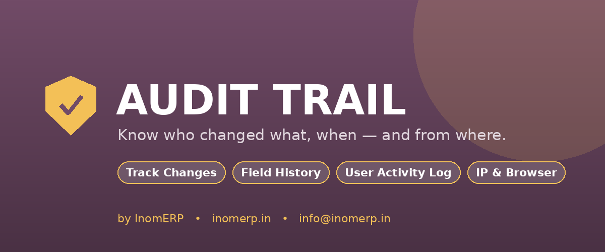
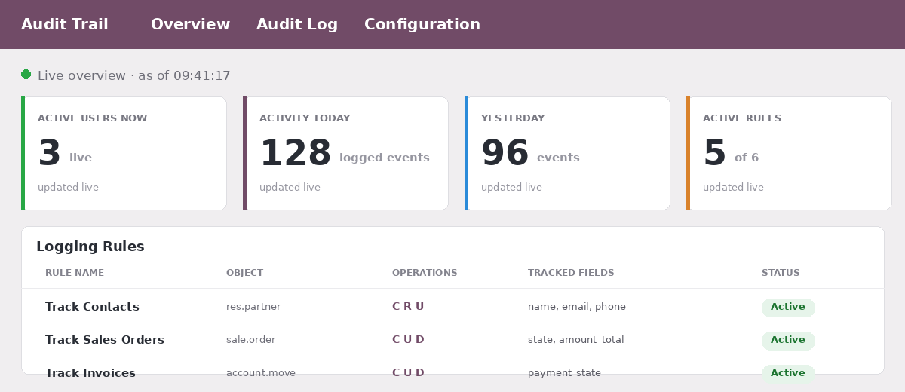

Know who changed what, when — and from where. Rule-based activity logging, field-level change history and a live audit dashboard for Odoo 17, 18 & 19.
Audit Trail is the complete audit log / user activity tracking app for Odoo. Track Create, Read, Update and Delete on any object, record the exact old value → new value for every tracked field, and capture the user's IP address and browser. Perfect for compliance, data security and accountability.

Maintain a tamper-evident audit trail for GDPR, SOX, HIPAA and ISO 27001. Demonstrate accountability with a clear, searchable history of every change to your critical business data — contacts, sales orders, invoices, products, users and more.
Odoo 17.0, 18.0 and 19.0 — Community and Enterprise.